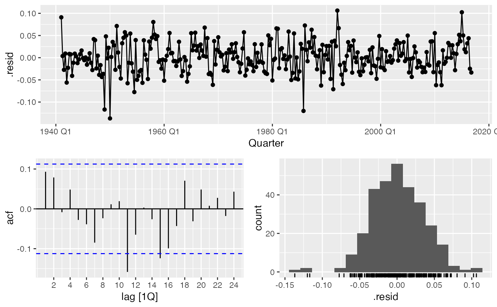

QuarterModelPicker.RdFunction to choose optimal forecast model for quarterly data
QuarterModelPicker(data, Outcome, DateVar, H.Horizon = 12)
| data | A quarterly tsibble. |
|---|---|
| Outcome | A valid variable name for the Outcome to be modelled in in `data`. |
| DateVar | A valid variable name for the time index in `data`. |
| H.Horizon | An integer for the forecast horizon/test subset of `data`. |
A list containing:
Accuracy.Table: accuracy for the forecast horizon against the test sample.
test: the test set
train: the training set
Model.Fits: the model fits
Model.Forecasts: the forecasts
Min.Model: the minimum model by MAE
Min.Report: the minimum model report
Min.Res.Plot: the gg_tsdisplay for the minimum model
Min.Forecast.Plot: a plot of the minimum forecast by MAE
#> Warning: Current temporal ordering may yield unexpected results. #> ℹ Suggest to sort by ``, `Quarter` first.#>#> Warning: Current temporal ordering may yield unexpected results. #> ℹ Suggest to sort by ``, `Quarter` first.#> Warning: Current temporal ordering may yield unexpected results. #> ℹ Suggest to sort by ``, `Quarter` first.#> Warning: Current temporal ordering may yield unexpected results. #> ℹ Suggest to sort by ``, `Quarter` first.#> Series: TX #> Model: ETS(A,N,A) #> Transformation: log(TX) #> Smoothing parameters: #> alpha = 0.1064772 #> gamma = 0.0001000001 #> #> Initial states: #> l s1 s2 s3 s4 #> 4.120824 -0.1299734 0.2409196 0.08730651 -0.1982527 #> #> sigma^2: 0.0013 #> #> AIC AICc BIC #> -286.1324 -285.7541 -260.1132#> $test #> # A tsibble: 12 x 5 [1Q] #> Quarter TX TN PR SN #> <qtr> <dbl> <dbl> <dbl> <dbl> #> 1 2019 Q4 54.4 39.8 7.42 0 #> 2 2019 Q3 78.4 59.3 5.88 0 #> 3 2019 Q2 70.6 50.8 4.94 0 #> 4 2019 Q1 49.8 35.5 8.43 6.5 #> 5 2018 Q4 56.7 42.4 11.4 0 #> 6 2018 Q3 82.6 57.8 1.67 0 #> 7 2018 Q2 70.7 51.0 4.47 0 #> 8 2018 Q1 52.0 38.4 9.72 6.6 #> 9 2017 Q4 54.1 40.2 14.1 1 #> 10 2017 Q3 82.5 57.7 2.44 0 #> 11 2017 Q2 68.1 49.1 7.51 0 #> 12 2017 Q1 46.7 34.6 21.8 8.4 #> #> $train #> # A tsibble: 304 x 5 [1Q] #> Quarter TX TN PR SN #> <qtr> <dbl> <dbl> <dbl> <dbl> #> 1 1941 Q1 55.3 37.7 8.6 0 #> 2 1941 Q2 68.1 47.9 6.74 0 #> 3 1941 Q3 77.1 56.1 5.06 0 #> 4 1941 Q4 55 42.0 16.3 0 #> 5 1942 Q1 48.2 34.7 8.9 0 #> 6 1942 Q2 65.9 47.6 7.16 0 #> 7 1942 Q3 79.0 55.5 1.63 0 #> 8 1942 Q4 54.5 41.2 24.4 2 #> 9 1943 Q1 48.6 32.7 14.3 17.3 #> 10 1943 Q2 66.3 47.2 6.43 0 #> # … with 294 more rows #> #> $Model.Fits #> # A mable: 1 x 15 #> `K = 1` `K = 2` #> <model> <model> #> 1 <LM w/ ARIMA(5,1,1) errors> <LM w/ ARIMA(1,1,3) errors> #> # … with 13 more variables: ARIMA <model>, ARIMA.T <model>, ARIMA.TS <model>, #> # ETS <model>, NNETT <model>, NNETTS <model>, NNETT1 <model>, NNETT2 <model>, #> # NNET1 <model>, NNET2 <model>, prophet <model>, Combo1 <model>, #> # Combo2 <model> #> #> $Model.Forecasts #> # A fable: 180 x 4 [1Q] #> # Key: .model [15] #> .model Quarter TX .mean #> <chr> <qtr> <dist> <dbl> #> 1 K = 1 2017 Q1 t(N(3.9, 0.0014)) 50.9 #> 2 K = 1 2017 Q2 t(N(4.2, 0.0014)) 68.9 #> 3 K = 1 2017 Q3 t(N(4.4, 0.0015)) 78.3 #> 4 K = 1 2017 Q4 t(N(4, 0.0015)) 55.2 #> 5 K = 1 2018 Q1 t(N(3.9, 0.0016)) 50.6 #> 6 K = 1 2018 Q2 t(N(4.2, 0.0016)) 69.1 #> 7 K = 1 2018 Q3 t(N(4.4, 0.0017)) 78.3 #> 8 K = 1 2018 Q4 t(N(4, 0.0017)) 55.6 #> 9 K = 1 2019 Q1 t(N(3.9, 0.0017)) 50.5 #> 10 K = 1 2019 Q2 t(N(4.2, 0.0017)) 69.2 #> # … with 170 more rows #> #> $Accuracy.Table #> # A tibble: 15 x 10 #> .model .type ME RMSE MAE MPE MAPE MASE RMSSE ACF1 #> <chr> <chr> <dbl> <dbl> <dbl> <dbl> <dbl> <dbl> <dbl> <dbl> #> 1 ARIMA Test 0.149 2.25 1.81 -0.234 2.97 NaN NaN -0.0303 #> 2 ARIMA.T Test 0.786 9.07 7.80 -1.30 12.2 NaN NaN -0.127 #> 3 ARIMA.TS Test 0.195 2.18 1.83 -0.159 2.98 NaN NaN 0.000214 #> 4 Combo1 Test -0.228 2.14 1.80 -0.826 2.99 NaN NaN 0.0000892 #> 5 Combo2 Test 0.191 2.28 1.85 -0.0831 2.99 NaN NaN 0.0140 #> 6 ETS Test -0.651 2.19 1.80 -1.49 3.05 NaN NaN -0.000423 #> 7 K = 1 Test 0.493 2.33 1.86 0.257 2.95 NaN NaN -0.00107 #> 8 K = 2 Test 0.443 2.26 1.85 0.222 2.98 NaN NaN -0.00119 #> 9 NNET1 Test 1.09 3.07 2.71 1.41 4.35 NaN NaN -0.118 #> 10 NNET2 Test -0.684 2.90 2.38 -1.56 4.00 NaN NaN -0.275 #> 11 NNETT Test -1.58 4.31 3.39 -3.22 5.99 NaN NaN -0.0797 #> 12 NNETT1 Test -0.275 3.25 2.83 -0.659 4.60 NaN NaN -0.271 #> 13 NNETT2 Test 1.04 3.32 3.11 1.42 5.21 NaN NaN -0.0181 #> 14 NNETTS Test -0.292 3.05 2.51 -0.804 4.32 NaN NaN -0.0965 #> 15 prophet Test 0.0130 2.18 1.86 -0.444 3.04 NaN NaN -0.0122 #> #> $Min.Model #> # A tibble: 1 x 10 #> .model .type ME RMSE MAE MPE MAPE MASE RMSSE ACF1 #> <chr> <chr> <dbl> <dbl> <dbl> <dbl> <dbl> <dbl> <dbl> <dbl> #> 1 ETS Test -0.651 2.19 1.80 -1.49 3.05 NaN NaN -0.000423 #> #> $Min.Report #> # A mable: 1 x 1 #> ETS #> <model> #> 1 <ETS(A,N,A)> #> #> $Min.Res.Plot #>